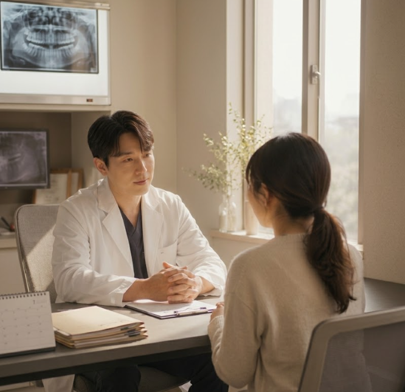

대학병원에서 상담을 하다 보면 종종 이런 분들이 오십니다. 현재 다른 치과에서 교정 치료를 받고 계신데, 잘 되고 있는 건지 확인받고 싶다고. 오늘도 그런 분을 만났습니다.
이런 경우, 환자분들은 대개 이미 많이 공부해 오십니다. 전문 용어도 자연스럽게 쓰시고, 본인 상태를 꼼꼼히 정리해 오신 분도 있습니다. 그만큼 불안했던 시간이 길었다는 뜻이기도 합니다.
저는 교정과 전문의가 기본적으로 잘못된 치료를 하고 있을 거라는 생각은 하지 않습니다. (그렇게 믿고 싶구요) 더군다나 개원하신 전문의 선생님들은 저보다 교정과 의사가 먼저 되셔서 경험이 많을 확률이 높고, 누구보다 환자를 잘 알고 계십니다. 교정 전문의 열 명이 같은 환자를 보면 열 가지 치료 계획이 나온다는 말도 있을 만큼, 교정 치료는 정답이 하나가 아니니까요.
그렇다면 왜 이런 분들이 생기는 걸까요.
오늘 상담을 하면서도 느꼈지만, 대부분은 소통의 문제였습니다.
치료의 방향이 아니라, 그 방향에 대한 설명이 충분히 전달되지 않은 것.
바쁜 진료 현장에서 매번 상세히 설명하기 어렵다는 건 이해합니다. 그럼에도 치료가 장기화될수록, 환자가 무엇을 불안해하는지 캐치하고 말을 건네는 일은 무엇보다도 제가 중요하게 생각하는 부분입니다.
오늘 제가 드린 말씀
이야기를 충분히 듣고 난 뒤, 저는 이렇게 말씀드렸습니다.
주치의 선생님이 지금 최선을 다하고 계신 것 같습니다. 환자분의 히스토리를 누구보다 잘 아는 분 역시 주치의 선생님이구요. 가장 좋은 방법은 그 선생님과 직접 소통하시면서 잘 마무리하시는 거예요. 그럼에도 환자분께서 답답함을 느끼시고, 대화가 잘 되지 않는다면 그 때 한번 더 내원해주세요.
어느 의사가 더 낫고 나쁘고의 문제가 아닙니다. 치료의 연속성은 주치의에게 있고, 그 관계 안에서 해결하는 것이 환자에게도 가장 이롭습니다. 다행히 오늘 오신 분은 그 말에 안심하시고 돌아가셨습니다.
그리고 저를 돌아보게 됩니다
이런 환자를 만날 때마다 저는 스스로에게 묻게 됩니다.
'나의 환자 중에도 이런 마음을 품고 계신 분이 있지는 않은가? 나는 설명을 충분히 하고 있는가? 바쁘다는 이유로 환자의 불안을 지나치고 있지는 않은가?'
언젠가 저도 개원을 하면, 하루에 (바라건데) 수십 명의 환자를 보게 될 것입니다. 그 바쁨 속에서도 각 환자가 지금 어떤 마음인지 놓치지 않으려면, 지금 가지는 이 마음부터 놓치지 말아야겠다는 생각이 드는 하루입니다.
오늘은 보다 제 개인적인 생각을 풀어놓는 상담일기가 되었네요 ^^.. 부디 이 글을 읽으시는 모든 분들은 소통에 진심인 교정과 선생님을 만나시길 바랍니다.
이상 교정과 전문의 손창한이었습니다.